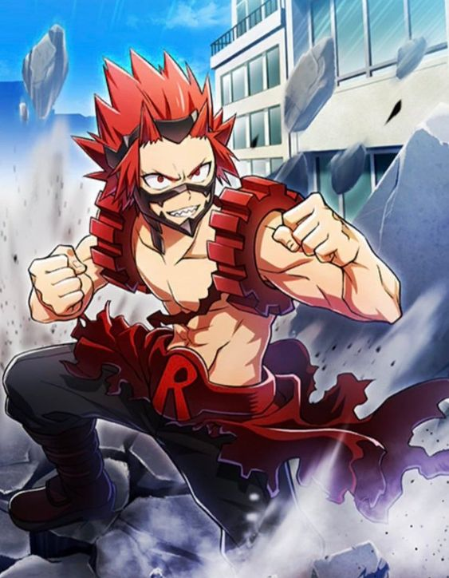
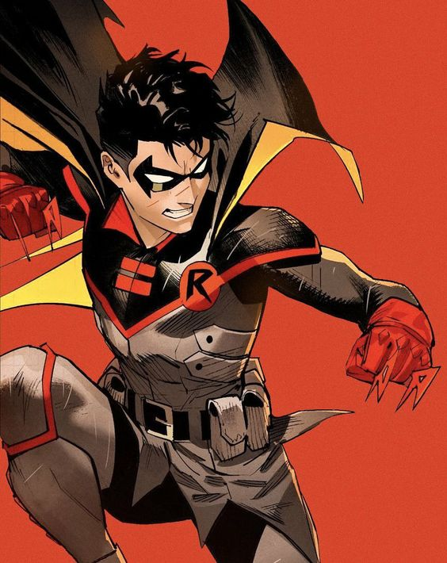
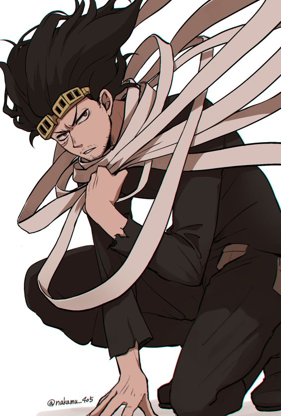
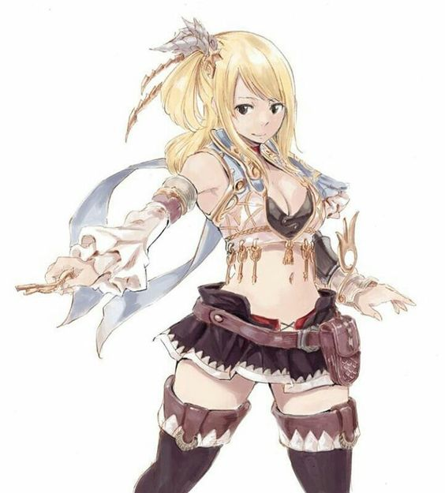

Favorite Superheroes
| Name |
Alias |
Image |
Superpower |
Weakness |
| Kirishima Eijiro |
Red Riot |
 |
Hardening: It allows Eijiro the power to harden and sharpen any or all parts of his body, causing his flesh to become jagged and rock-like. |
He can only take so much damage before his power wears off, for example his hardening can crack and fall off. |
| Damian Wayne |
Robin |
 |
No known superhuman powers, but is an expert martial artist and intellect in science |
Possesses all the weaknesses of a normal human male as he has no supernatural powers |
| Shota Aizawa |
Eraser Head |
 |
Erasure: It allows him to nullify others' control over their powers by making eye contact with them. |
Blinking dispels the effect of his power and using it gives him very dry eyes. |
| Lucy Heartfilia |
N/A |
 |
Celestial Spirit Mage: Her powers come from magical keys that summon celestial spirits to aid her and enhance her abilities. |
Without her celestial keys she is a weak hero, with little strength to offer. |
{kind=link}
{kind=link}
{kind=link}
{kind=link}